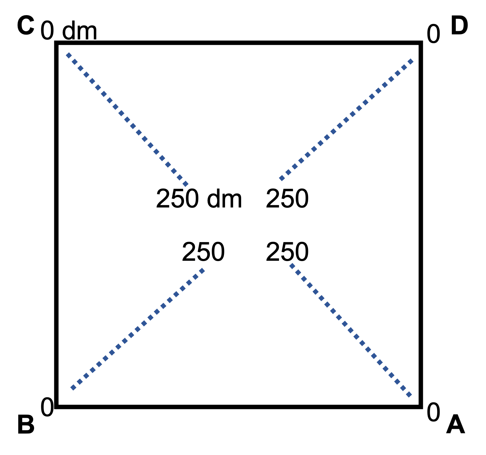

Portal Site Description, Methods, and Metadata
Desert ecosystems have long served as model systems in the study of ecological concepts (e.g., competition, resource pulses, top-down/bottom-up dynamics). However, the inherent variability of resource availability in deserts, and hence consumer dynamics, can also make them challenging ecosystems to understand. Study of a Chihuahuan desert ecosystem near Portal, AZ began in 1977. At this site, 24 experimental plots were established in 1977 and divided among controls and experimental manipulations. Experimental manipulations over the years include removal of all or some rodent species, all or some ants, seed additions, and various alterations of the annual plant community. Data have also been published as a living data paper on bioRxiv. It is updated regularly with new data, methods and authors. Older versions of the data paper were published in Ecological Archives (Ernest et al 2009, 2016).
These data have been used in a variety of publications documenting the effects of the experimental manipulations as well as the response of populations and communities to long-term changes in climate and habitat. Sampling is ongoing and additional data will be published as it is collected.
Site Description:
The site occurs in an upper-elevation Chihuahuan Desert habitat (1330 m), dominated by a mixture of shrubs (e.g. Acacia constricta, Prosopis sp., Flourensia cernua) and grasses (e.g. Aristida sp. Bouteloua sp., Eragrostis sp..). Dominance of grasses versus shrubs has shifted over the 40 years of the study, shifting from what was mainly a desertified open grassland to a mixed shrubland (Brown et al 1997). The site itself sits on a bajada at the base of the Chiricahua Mountains and consists of mainly sandy soils.
The entire study area is approximately 20 ha and within this area there are 24 experimental plots Figure 1. Each plot is 0.25 ha (50m x 50m) and fenced with hardware cloth topped with aluminum flashing. Access to these plots by rodents is regulated by gates cut into fencing. On each plot there are permanent census grids: one for rodents and ants and another for plants. For the rodent/ant grid, 49 permanent trapping stations are marked by rebar stakes forming a 7x7 grid, with 6.25 m between stakes. Every stake on a plot has a unique identifying number denoting the coordinate of that stake on that plot. For example, stake 11 is the first stake on the first row. Rows are numbered 1 through 7 going from the most northern row to the most southern. Columns are numbered 1 through 7 going from the most western column to the most eastern Figure 1. The plant grid contains fewer rows and columns (4 rows, 4 columns). Numbering of the plant stakes follows similar rules to the rodent/ant grid, except that even numbered rows and columns are skipped (censuses use rows 1, 3, 5, 7 and columns 1, 3, 5, 7). Each plant quadrat is 1 m south of the rodent/ant stake of the corresponding number. Details for how these grids are used for data collection can be found in the section for the specific dataset files below.
The study site is located approximately 6.5 km north and 2 km east of the town of Portal, AZ (31°56’20.29”N 109° 4’47.44”W). We have provided GPS coordinates for the rodent stakes, plant quadrats, plot corners, and the weather station (Coordinates file). These data were collected March 12 – 17, 2011. A few missing coordinates and the coordinates for the newly-rebuilt corner of plot 24 were collected March 28-29, 2017 with a regular (less accurate) handheld GPS. These are flagged in the data.

Fence Replacement:
By 2004, almost 30 years of desert climate had caused the fences around each plot to begin to deteriorate. A local contractor was hired to gradually replace fences on each plot. Generally, fences were taken down and replaced quickly. In a few cases, fences were down when rodent trapping occurred. These events are marked in the rodent database with a note1=10 flag. Records indicate that fence replacement occurred from 3/1/2004-5/8/2005. During fence replacement, the northeast corner of plot 24 was cut off. After this point, rodent stake 17, and plant quadrat 17, were outside the plot fencing and so were no longer used during trapping and censusing. In March of 2016, the corner of Plot 24 was rebuilt, and censusing resumed at those locations.
Site history:
The site is on U.S. Bureau of Land Management property. This area has a long history of cattle grazing and is currently still stocked with cattle. No grazing has occurred on the 20 ha site since a cattle fence was erected around the study area in 1977 (Figure 1).
Climate:
There are two rainy seasons at the site, occurring roughly from Oct-April and July-Sept. The two rainy seasons result in generally two distinct annual plant communities, with a few bi-seasonal annual species.
Experimental design:
The study consists of 24 experimental plots, assigned to various ant, rodent, and plant manipulations. At the onset of the study, one rodent species and one ant species each were suspected to potentially have a disproportionate effect on species interactions at the site. Both southwestern desert specialists, these were Dipodomys spectabilis (Banner-tailed kangaroo rat) and Pogonomyrmex rugosus (Rough Harvester Ant), respectively. In addition to overall rodent and ant plot treatments, a subset of treatments were designed to target these important species specifically. However, these two species were also locally rare and declining over time. (Its rarity motivated an exception to the ant census protocol for Pogonomyrmex rugosus, to count all colonies on a plot, rather than only colonies in the census area. See the Ant section below for more information). Once it became clear that these specialized treatments were no longer necessary, the plots were converted to one of the general ant or rodent treatment types.
Treatments:
As a result of direct changes to the plots, or the termination of experimental manipulations, changes in treatment assignment occurred in 1985, 1987, 2005, 2009 and 2015. These changes are described in Portal_plot_treatments. Unlike the others, Plot 24 was built in 1979. Blank cells denote no changes in treatment from the previous time period. Pogonomyrmex rugosus is an ant species that built very large colonies at the site, but eventually declined until removal treatments were no longer necessary. Dipodomys spectabilis is a large and typically dominant rodent granivore that also declined during the 1980s. (Table modified from Brown 1998). The experimental rodent treatments were switched on all of the short-term plots on March 31 2015. The plots with no entry after the first column are the subset of plots that have maintained a consistent manipulation since 1977. Portal_plots can be used to correctly assign each plot’s treatment over time.
Rodent treatments:
Rodents are manipulated using gates in the fencing of each plot. Rodent removals contain no gates and any rodents captured on those plots are removed. All other plots contain 16 gates (4 per plot side); gates consist of holes cut through the hardware cloth of the fencing. Gate size is used to exclude subsets of the rodent community (larger gates allow all rodents access, smaller gates exclude kangaroo rats). Dimensions for gates on kangaroo rat removal plots are 1.9 cm x 1.9 cm, D. spectabilis removals were 2.6 cm x 3.0 cm, and control plots are 3.7 cm x 5.7 cm. In 2005, Dipodomys spectabilis removals were converted to controls – a state these plots had effectively been in with the local extinction of Dipodomys spectabilis in the late 1990s. Species caught on plots from which they are supposed to be excluded are removed from the site and the access point to the plot is located and eliminated. Plots affected by these treatments are listed in Portal_plot_treatments.
Plant treatments:
Since January 1988 there have been no direct manipulations of the plant community. From July 1985 to December 1987, annuals were “removed” by applying an herbicide (brand: Roundup), but this removal was not considered successful and was discontinued (Brown 1998). Plots affected by these treatments are listed in Portal_plot_treatments.
Seed additions:
Since 1985 there have been no seed additions to any plot. From September 1977 to July 1985, seed additions were conducted by applying 96 kg of milo (Sorghum vulgare) and/or millet (Panicum miliaceum) seeds to designated plots (Davidson et al 1985). In July 1985 seed addition was discontinued and these plots were re-assigned to plant removal treatments (Brown and Heske 1990). Plots affected by these treatments are listed in Portal_plot_treatments.
Ant treatments:
Ant manipulations were conducted by applying a commercial poison (Mirex [Allied Chemical Corporation] through 1980 and AMDRO [American Cyanamide Company] afterwards) to designated plots (Davidson et al 1985). Poison was either applied broadly over the plot to remove all species of ants, or applied just to the conspicuous mounds of Pogonomyrmex rugosus and P. barbatus. Plots affected by these treatments are listed in Portal_plot_treatments. After the July 2009 census, ant treatments and ant censuses were discontinued.
Ant Data
The data set covers a 33 year period (1977-2009) of detailed ant sampling of an arid ecosystem near Portal, Arizona. Each year, ant colonies were counted within 49 circular 2-m radius quadrats on each of 24 experimental plots. In addition, a yearly bait census was conducted using 25 regularly spaced 10 cm diameter crushed bait piles on each plot. The data set should prove useful for studies of population dynamics and species interactions. Sampling was terminated in 2009.
Data Collection:
Census of the ant community occurred every year over a two week period during July after the summer monsoons have begun.
Bait census:
On each plot on one morning in July, we set 25 bait piles on each plot. Bait piles consist of crushed millet placed on the ground in a 10 cm diameter circle. Bait piles are placed at the base of the permanent rebar stakes. In rows 1, 3, 5, and 7 we place bait at all odd column stakes (e.g. stake 11, 13, 15, 17). In rows 2, 4 and 6, we place bait piles at even numbered column stakes (e.g., stake 22, 24, 26). This creates a checkerboard layout of bait piles across the entire plot. Baits are established at dawn and ants are allowed to recruit to bait piles for 1.5 hours. After 1.5 hours, all bait piles are censused recording all individuals of all species within the 10 cm diameter bait circle.
Colony census:
We record the number of colonies and the number of colony entrances for all diurnal species within a 2 m radius circle that is centered 2 m north of each of the 49 permanent stakes. For each colony entrance, we record the species identity and determine whether any additional entrances exist within 0.5 m. If so we define that as one colony with multiple entrances.
Exceptions to this methodology, indicated with data flags:
For all years: For Solenopsis, we simply recorded the presence (1) of any colony entrance within the 2 m radius circle.
1977-1983: According to Davidson et al (1985), number of colony entrances within the entire 0.25 ha plot were records for the following species: Novomessor, Pheidole desertorum, Pheidole militicida, Pogonomyrmex barbatus, Pogonomyrmex maricopa, Pogonomyrmex rugosus. Nearest census stake was recorded for these species.
1988-2009: For Novomessor and Pogonomyrmex rugosus, we counted the number of all colony entrances within the entire 0.25 ha plot. Records in the database for these species are the number of colony entrances closest to each stake.
1984-1987: It is currently unclear whether the data from 1984-1987 follows the 1977-1983 protocol for full plot surveys or the 1988-2009 protocol. Given documentation found referring to the ant census during this time, we suspect protocols were in-line with 1988-2009, but cannot say with certainty.
Plant Data
Vegetation data is collected in two ways at the site. Quadrats measure abundance of all plant species and transects measure abundance and cover of shrub species. Each year rooted plants are counted within 16 fixed quadrats on each of 24 experimental plots. The data set should prove useful for studying population dynamics and species interactions. Sampling is ongoing and data will be added over time.
Description of Winter Communities:
The first winter annuals typically germinate in response to the first autumn rains in October or November but there tends to be considerable variation among winter species in the timing of germination and initial growth. Maximum flowering occurs in late spring (late March/early April) and all annual species (except biennials) senesce by May. Species considered part of the winter community are indicated in the Community column of the Plant species list.
Description of Summer Communities:
Typically, germination of summer annuals begins within a few days of the first summer rains in late June or early July. Maximum flowering typically occurs in late August or early September and annual plants senesce by October. Species considered part of the summer community are indicated in the Community column of the Plant species list.
Description of Perennial or other Species:
Species that are persistent from year to year are considered separately from the winter and summer communities. There are also a few species that may occur in either the winter or summer season in a year, or those that will germinate in the winter but set seed in the summer (called a Winter and Summer Annual) These designations are indicated in the Community column of the Plant species list.
Treatments:
See the Treatments table, for details on treatment assignments for each plot over time. Portal_plots can be used to correctly assign treatment by year and month.
Data Collection:
Quadrat Abundance Data
Plant data were collected nearly continuously from 1978-present. Because there are two annual plant communities - one in the winter and one in the summer - there are two plant surveys per year. The surveys occur towards the end of the growing season; occurring in spring for the winter community and fall for the summer community. Plant censuses were of sufficient quality by 1981 that data has been provided starting in this year. However, there are concerns that not all species were always identified and recorded, especially perennials, in the data from 1981 - 1988. We are certain that by 1989 all species were being identified and recorded, including all perennials occurring on quadrats. These data are in the Portal_plant_quadrats file, where “cover” and “cf” columns were not used. Beginining in the summer of 2015, % cover was recorded by species and included in the abundance table. Unknown species are also assigned a similar species in the “cf” columns where possible. These data in the Portal_plant_quadrats file and use the “cover” and “cf” columns. It is continually updated with new data. Dates of plant censuses, when known, are listed in Portal_plant_census_dates.
In 1981 and 1982, only 8 of the 16 permanent stations were censused, and some plots were not censused at all in winter 1982. Information on which stations were censused can be found in Portal_plant_censuses.csv. Due to intermittent funding, gaps in data collection exist beginning in 2010. On a quadrat level, the data file Portal_plant_censuses provides a record of when each quadrat was censused.
Quadrat dimensions are 0.5 m x 0.5 m. Quadrats are placed at locations permanently marked by a rebar stake. Plants rooted within 16 fixed quadrats in each plot are counted each spring (winter annual survey) and fall (summer annual survey). Several adjacent stems are counted separately when the species is an annual, and as one individual when the species is a perennial. Prior to 1989, perennial species were not systematically included in these counts of abundance. The Plant species list indicates species that are considered perennial at the site.
Transect Shrub Data
1989 - 2009
Transect data were initially collected in a point-intercept-transect (PIT) method. In each plot, four transects of 25 m each were made. Each transect was placed diagonally from a corner of the plot to the center (approximately; transects did not reach either to a corner or the center in fact). They are numbered on the data sheets as follows: A (NW corner), B (NE corner), C (SE corner), D (SW corner). The plant species (or lack of plants) was recorded every 1 decimeter (10 cm) along the 25 m, for a total of 250 data points per transect. (See figure below). A “matched pair” transect was made directly outside each plot, placed so that one end was near the corner of its within-plot mate. Exact position of the transect varied with topography. They are numbered as follows: E (NW corner), F (NE corner), G (SE corner), and H (SW corner). Growth type included in this census was not consistent across years, though shrub species were always included. This data collection ended in 2009.

2015 - present
Transect data on shrub cover and abundance resumed in 2015, using a line-intercept-transect (LIT) method. These data are collected yearly, during the summer plant census. Transects are run diagonally across the plots, from the corner nearest stake 11 (NW corner), and the corner nearest stake 71 (SW corner). (See figure below). Species, width intersecting the transect (as “start” and “stop”, in mm), and greatest height (in cm) are recorded. Only species with woody or persistent growth are counted in this census. Annual and herbaceaous perennial species are not included in these data. In the first year of collection, 2015, only one location on the transect was recorded for each individual (start and stop values are the same, and are actually the midpoint at which the shrub intersected the transect).
Data notes
Several datanotes are used to indicate specific problems in data collection. In most cases, the data are still appropriate for use.
Note 6 - species ID issue, refers to a few specific cases of uncertainty in species ID. These are outlined below. We have left the original species in the data, but flagged it with a 6. We recommend you use the corrected species for most analyses.
| Original Species | Corrected Species | Explanation |
|---|---|---|
acac greg |
mimo acul |
mimo acul was called acac greg until a specimen was vouchered in 2017, we cannot be certain that all of these acac greg IDs were incorrect, but most are extremely likely to be mimo acul |
lyci torr |
lyci ande |
lyci ande was called lyci torr until a specimen was vouchered in 2016, we cannot be certain that all of these lyci torr IDs were incorrect, but most are extremely likely to be lyci ande |
tali angu |
tali aura |
Originally recorded as separate species, tali angu and tali aura are considered synonyms. only tali aura was used starting in 2017. |
Rodent Data
The data set includes continuing monthly rodent surveys. Each month rodents are trapped on all 24 experimental plots and information on each captured rodent is contained in this file. The data set should prove useful for studying population dynamics and species interactions. Sampling is ongoing and data will be added over time.
Treatments:
Rodent access to plots is regulated using gates cut into the fencing. Large gates (3.7 x 5.7 cm) allow all small mammals to access plots. Small gates (1.9 x 1.9 cm) exclude kangaroo rats (Dipodomys) whose inflated auditory bullae make their skulls too large to pass through the gates. Rodent removal plots do not contain any gates and animals caught on those plots are removed and released outside the cattle exclosure fence. See Portal_plot_treatments, for details on treatment assignments for each plot. See the latest (link at top) and previous data publications (Ernest et al 2009) for a history of plot treatments and methods. Portal_plots can be used to correctly assign treatment by year and month.
Data Collection:
From 1977-present, plots were trapped around each new moon, which occurs approximately once a month. The survey occurs as close to the new moon as possible to minimize external effects on trapping success which could be misconstrued as actual changes in populations. Occasionally blue moons do occur, resulting in 2 separate surveys in a month. Occasionally, months are missed. Months that are entirely missed are not noted in the database. Sometimes weather or other unforeseen occurrences prevent the complete trapping of a survey, and these are noted in the data in the note1 column. Due to intermittent funding, gaps in data collection exist in 2010 and 2011. The longest data gap, 2020 - 2021, is due to the COVID-19 pandemic. The moon dates table can be used to link our period codes to the regularly-spaced new moon intervals.
During a survey (2 nights), each plot is trapped for one night, with treatments divided evenly between the 2 nights to eliminate differences between controls and treatments caused by environmental differences on different nights. When a plot is surveyed, all gates are closed to ensure that only resident individuals are captured. At each stake, one Sherman live-trap is placed and baited with millet seed. Traps are collected the next morning and individuals processed.
Any animal found in a trap is recorded. Non-rodent species are occasionally trapped and so are given species codes. Several flags are included in the species table to restrict the species list to only rodents, only target species, or only granivores. Additionally, the note1 column in the rodent data table contains a flag for non-target species (13).
Each individual of a target species is tagged and data on species, location caught (plot and stake), sex, reproductive condition (see below), weight (wgt), and hindfoot length (hfl) are recorded. The tag column contains the primary individual identifier, and the only one when PIT tags were used. ltag contains secondary tag information when ear tags were used in both ears. prevrt and prevlt are used to keep track of previous tag history when an individual needed to be retagged. Information on nearest stake was recorded initially, but the columns are no longer used.
The reproductive data are divided into separate columns to allow for more than one value assigned to an individual:
| Category | Column | Value | Meaning |
|---|---|---|---|
| non-reproductive adults | reprod |
Z |
Zero |
| juveniles | age |
J |
Juvenile |
| scrotal males | testes |
S |
Scrotal |
| recently scrotal males | testes |
R |
Recent |
| pre-scrotal males | testes |
M |
Minor |
| reproductive females | vagina |
S |
Swollen |
| reproductive females | vagina |
P |
Plugged |
| reproductive females | vagina |
B |
Both |
| pregnant females | pregnant |
P |
Pregnant |
| reproductive females | nipples |
E |
Enlarged |
| reproductive females | nipples |
S |
Swollen |
| reproductive females | nipples |
B |
Both |
| reproductive females | lactation |
L |
Lactating |
The data ‘note’ system for flagging data
There are 5 note columns we use to keep track of special cases in data collection.
The note1 column is used to flag minor problems in the data that may require special attention. They do not necessarily indicate the data should not be used. There are several of these, and the meaning of these notes are recorded in datanotes. Many of these notes have been used inconsistently throughout the years, but their effect on the quality of the data is minimal (usually a recorder will fail to use a note precisely because of how minor the issue is). For example, note1 = 14 (plot incompletely trapped) has not always been noted when only 1 or 2 traps were missing. In cases where note 14 was used, we have reduced the effort in the trapping table accordingly, and effort is assumed to be 49 in all other cases. Similarly, the ‘gates open’ notes (6 and 18) have not always been used when gates were accidentally left open. But it is reasonable to assume that all gates were shut during trapping in the vast majority of cases unless otherwise noted.
Columns note2 and note3 are used to flag newly tagged individuals with a * (note2 for tag and note3 for ltag). The note4 column notes further details about tag condition. UT marks an untagged individual (it may have died during trapping, or escaped before getting a tag). TA indicates a tagged individual (in cases where the tag was not recorded, making it unclear from the rest of the data that it was tagged, e.g. it may have escaped before reading the tag). TE notes an individual with a torn ear, indicating it likely had a tag but lost it. TR, TL, or TB specify that it was the right ear, the left ear, or both that were torn, respectively.
The note5 column notes special cases in how an individual was released. It is noted if an animal escaped before all information was gathered (E), was removed from the site because it was caught on a plot it was supposed to be excluded from (R), or died during trapping (D).
Negative period codes
Trapping records that do not follow normal protocols are indicated with a negative period code. In almost all cases, negative periods codes should be excluded before using the data. Negative period codes may indicate trapping for a specific individual, or cases in which an individual was found dead, or it’s tag was found. Infrequently, trapping has been conducted at specific locations around the outside of the plots. These trapping records are assigned negative period codes and should be removed from the regular trapping data. In these off-plot trapping sessions, stake numbers are assigned to the outside perimeter of the plot as follows:
| Stake | Location |
|---|---|
01 |
N fence, W corner |
07 |
N fence, E corner |
18 |
E fence, N corner |
88 |
E fence, S corner |
08 |
SW corner |
50 |
middle of W fence |
Tag data
Tags in the tag and left_tag column are not necessarily unique to individuals. The id column was created to identify unique individuals, based on the tag data, can be used to track individuals over time. It is unique to individual, across the entire time series. The pit_tag column indicates which of these unique ids are based on PIT tags, which are more reliable than other tagging methods.
Weather Monitoring Data
The data set includes continuous weather monitoring near Portal, Arizona. From 1980-1989, daily minimum and maximum air temperature values were recorded at the site. Manually collected precipitation data is also available. Unlike the temperature data, the precipitation data for these years are not daily and should only be used after summarizing over months or years. In 1989, the site switched to an automated weather station which recorded hourly rainfall amounts and air temperatures. In 2002, this weather station was updated. In 2016, the station was updated again and new sensors were added to collect additional data. These data are continuously updated.
Due to the small spatial-scale of the plot and the spatial scale of the typical precipitation event, there is only one weather station for the site. This station has been located in the same general vicinity of the 20 ha site since 1980 (see Figure 1 for location and the Coordinates file for coordinates).
Data Collection:
Before 1989, precipitation was collected in a standard “manual” rain gauge and approximately weekly a volunteer residing in the vicinity would visit the site and collect data on rainfall amounts. The Day column in the pre-1989 data therefore does not reflect actual daily rainfall, but provides a record of data collection only. It is necessary to use only summarized monthly rainfall for this data. The temperature data was recorded by a circular hygrothermograph and daily minimum and maximum temperatures were transcribed onto datasheets. In 1989, an automated weather station was installed at the site (Campbell Scientific) capable of recording precipitation amounts and air temperature on an hourly basis. The automated and manual collection protocols were run concurrently for approximately 2 months until the old weather station was hit by lightning. After a serious malfunction in February 2002, a new automated weather station (Campbell Scientific) was installed in December 2002. In November 2016, a new station (Campbell Scientific) was installed that includes additional sensors.
The weather data are divided into two files (1980-1989 and 1989-present) to reflect the different frequencies of data collection. Overlap in the 2002 and 2016 weather stations is documented in Portal_weather_overlap. This file contains duplicate values for air temperature, precipitation, and relative humidity and can be used to compare the two between stations or create an average.
Data information by station
1980-1989: Very little documentation exists regarding collection of weather data prior to 1989. Though we know from the charts that a circular hygrothermograph was used to collect temperature data, we do not know the instrumentation used. Humidity was also recorded, but we know from notes on the charts that it was considered unreliable. Our only record of the collection of precipitation data is the date on which a non-zero amount was recorded. We have included precipitation in the daily data table to retain this collection record. Of course, this does not reflect actual daily rainfall. The daily precipitation data should absolutely not be used, but should be summed over longer time periods to correct for the irregular collection. The notes column in this table indicates when a hand-recorded data point has been corrected due to a likely error (note = 1, the correction can be found in the git log for this file).
1989-2002: Data were downloaded monthly in conjunction with the monthly rodent census. The rain gauge was a Weather Measure Corp model number P-501 (serial number 2363) tipping bucket rain gauge. The data suggest that each tip was equal to 0.254 mm (precipitation data are in multiples of 0.254). There is no record of why the few gaps exist in the data during this time period.
2002-2018: The 2002 station had a CS500-L Temperature/RH probe and a TE525MM-LL Rain Gauge. This rain gauge has a .1 mm tipping bucket (precipitation data are in multiples of 0.1) and a 24.5 cm funnel.
In 2011, gaps exist in the weather data due to corruption in the datalogger program (possible lightning strike). In March of 2014, it was noticed that mud had clogged the rain gauge, causing water to collect and potentially affect the data recorded by the station. After clearing it out, precipitation data looked more normal. It is unknown for how long before this the gauge was clogged. Precipitation data for a significant time period before cleaning the gauge is slower and more prolonged than usual, and we cannot say weather this is accurate or due to mud in the gauge. There was an extreme drought in 2009 and 2010. This data was likely unaffected by the clogged funnel, but it may have been when the funnel clogged, due to lack of precipitation. Daily summed data from 2011 until March 2014 looks unaffected and can still be used as normal. On August 3, 2014, 12:00, a new funnel replaced the old one. However, it was replaced with a smaller funnel than the original (20.3 cm). This equates to less area sampled, and a different precipitation calculation than what is programmed in the datalogger. Thus, the precipitation data from August 2014 until the end of this station’s data is corrected with the following post hoc calculation: 4.73(.254*precipitation/.1)/8.25. The weather station’s battery was bad from Oct 2015 to Feb 2016; use data from this period with caution.
2016-present: This station was purchased from Campbell Scientific and installed in November of 2016 (by GMY, EMC, EKB). In addition to a temperature/RH sensor (CS215) and tipping bucket rain gauge (TE-525WS-L, 0.254 mm per tip, 20.3 cm funnel), it has a pyranometer (CS300), wind monitor (03002 R.M. Young Wind Sentry Set) and barometer (CS100). Data is uploaded remotely each day. Data is organized as described below. In addition to the hourly data, this station collects precipitation data in 5 minute intervals during storm events. This is in the separate table Storms.
For a period after the initial installation (until 5/27/2017), the battery would drain and prevent data collection at night. These gaps were filled in with values from the 2002 station. From 5/27/2017 until 7/22/2017 the wiring for the rain gauge and wind monitor were crossed. During this time, wind data is missing and precipitation data from the 2002 station was used to fill in the gap.
Occasionally, an extreme amount of rain falls in a very short time. The Storms table, starting in 2016, can be used to get more information about extreme precipitation events. Precipitation values over 10 mm in a 5-minute interval are considered extreme.
Column descriptions for Portal_weather.csv. The data in this file span three weather stations. The first only recorded Air Temperature and Precipitation, and the second only Air Temperature, Precipitation and Relative Humidity, so other columns are left blank. The column RECORD contains a unique value for each hourly reading on a datalogger. Thus, when the data switches to the new station, RECORD starts over at 0.
| Column Name | Units | Measurement Type | Value |
|---|---|---|---|
year |
Years | Year | |
month |
Months | Month | |
day |
Days | Day | |
hour |
2400-hour | Hour | |
timestamp |
y-m-d h : m : s | ||
record |
Record value on weather station | ||
battv |
Volts | Smp | Battery Voltage |
PTemp_C |
Deg C | Smp | Panel Temperature |
airtemp |
Deg C | Avg | Air Temperature |
RH |
% | Smp | Relative Humidity |
precipitation |
mm | Tot | Total Precipitation |
BP_mmHg_Avg |
mmHg | Avg | Barometric Pressure |
SlrkW_Avg |
kW/m^2 | Avg | Average Radiation |
SlrMJ_Tot |
MJ/m^2 | Tot | Total Radiation |
ETos |
Deg C | ETXs | Total Evapotranspiration |
Rso |
Deg C | Rso | Clear Sky Solar Radiation |
WS_ms_Avg |
meters/second | Avg | Wind Speed |
WindDir |
degrees | Smp | Wind Direction |
WS_ms_S_WVT |
meters/second | WVc | Wind Vector: Speed |
WindDir_D1_WVT |
Deg | WVc | Wind Vector: Direction |
WindDir_SD1_WVT |
Deg | WVc | Wind Vector: Std Dev (Dir) |
HI_C_Avg |
Deg C | Avg | Heat Index |
SunHrs_Tot |
hours | Tot | Sunshine Hours |
PotSlrW_Avg |
W/m^2 | Avg | Potential Solar Radiation |
WC_C_Avg |
Deg C | Avg | Wind Chill |